基于单ECS实例的LLM模型部署文档
部署说明
本服务提供了基于ECS镜像与VLLM的大模型一键部署方案，10分钟即可部署使用QwQ-32B模型，30分钟即可部署使用Qwen3-235B-A22B模型。
本服务通过ECS镜像打包标准环境，通过Ros模版实现云资源与大模型的一键部署，开发者无需关心模型部署运行的标准环境与底层云资源编排，仅需添加几个参数即可享受主流LLM（如Qwen、DeepSeek等）的推理体验。
本服务支持的模型如下： * Qwen/Qwen3-235B-A22B * Qwen/Qwen3-32B * Qwen/Qwen3-8B * Qwen/QwQ-32B * Qwen/Qwen2.5-32B-Instruct * deepseek-ai/DeepSeek-R1-Distill-Llama-70B * deepseek-ai/DeepSeek-R1-Distill-Qwen-32B * deepseek-ai/DeepSeek-R1-Distill-Qwen-7B
整体架构
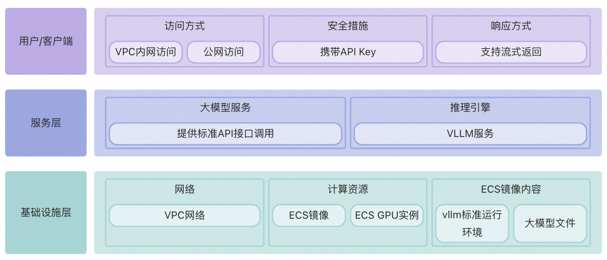
计费说明
本服务在阿里云上的费用主要涉及： * 所选GPU云服务器的规格 * 节点数量 * 磁盘容量 * 公网带宽 计费方式：按量付费（小时）或包年包月 预估费用在创建实例时可实时看到。
RAM账号所需权限
部署服务实例，需要对部分阿里云资源进行访问和创建操作。因此您的账号需要包含如下资源的权限。
| 权限策略名称 | 备注 |
|---|---|
| AliyunECSFullAccess | 管理云服务器服务（ECS）的权限 |
| AliyunVPCFullAccess | 管理专有网络（VPC）的权限 |
| AliyunROSFullAccess | 管理资源编排服务（ROS）的权限 |
| AliyunComputeNestUserFullAccess | 管理计算巢服务（ComputeNest）的用户侧权限 |
部署流程
- 单击部署链接。选择单机版。根据界面提示填写参数，可根据需求选择是否开启公网，可以看到对应询价明细，确认参数后点击下一步：确认订单。 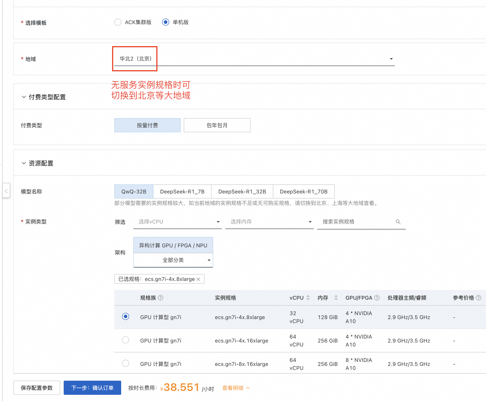 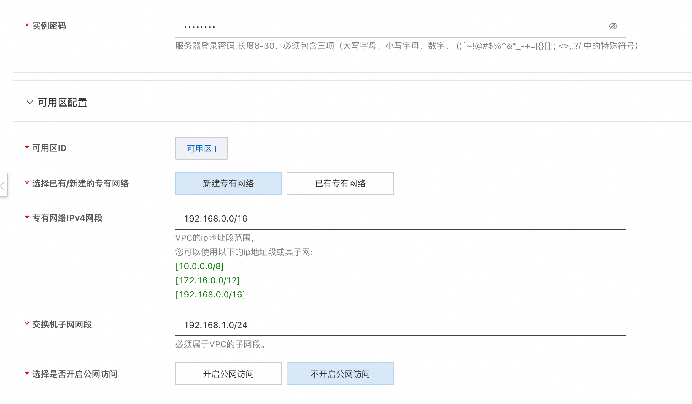
- 点击下一步：确认订单后可以看到价格预览，随后可点击立即部署，等待部署完成。(提示RAM权限不足时需要为子账号添加RAM权限) 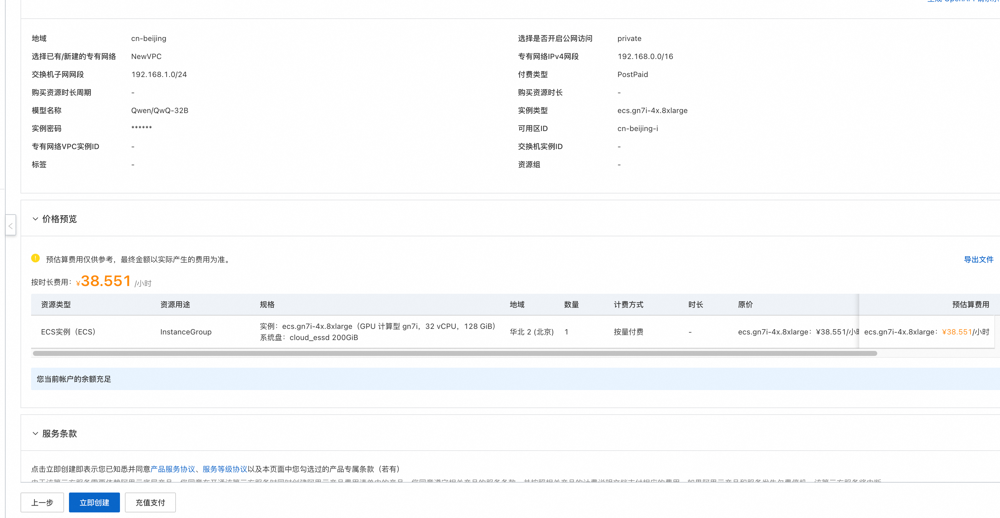
- 等待部署完成后，就可以开始使用服务了。点击服务实例名称，进入服务实例详情，使用Api调用示例即可访问服务。如果是内网访问，需保证ECS实例在同一个VPC下。 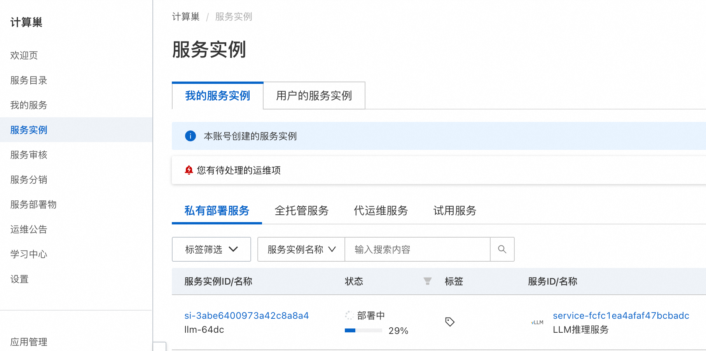 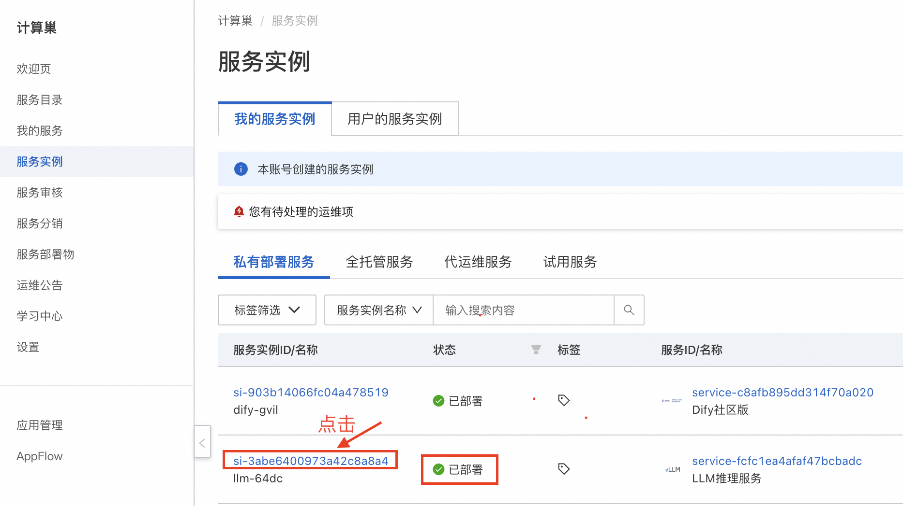 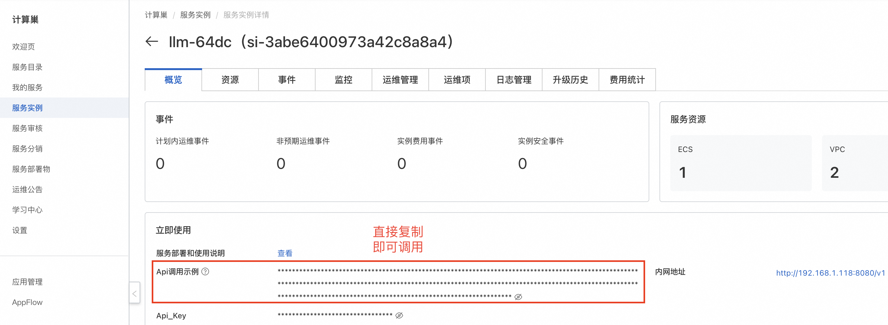
- ssh访问ECS实例后，执行 docker logs vllm 即可查询模型服务部署日志。当您看到下图所示结果时，表示模型服务部署成功。模型所在路径为/root/llm_model/。 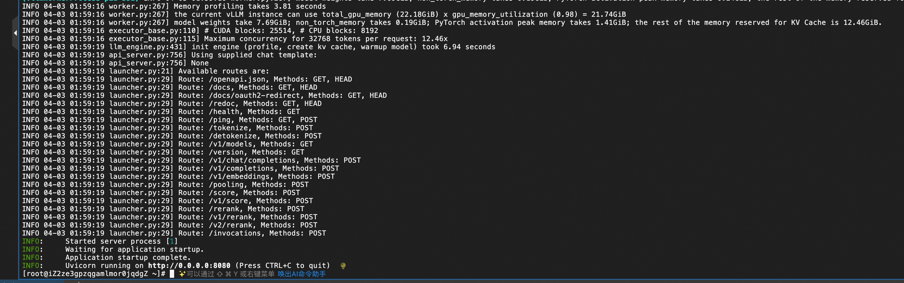
使用说明
查询模型部署参数
- 复制服务实例名称。到资源编排控制台查看对应的资源栈。 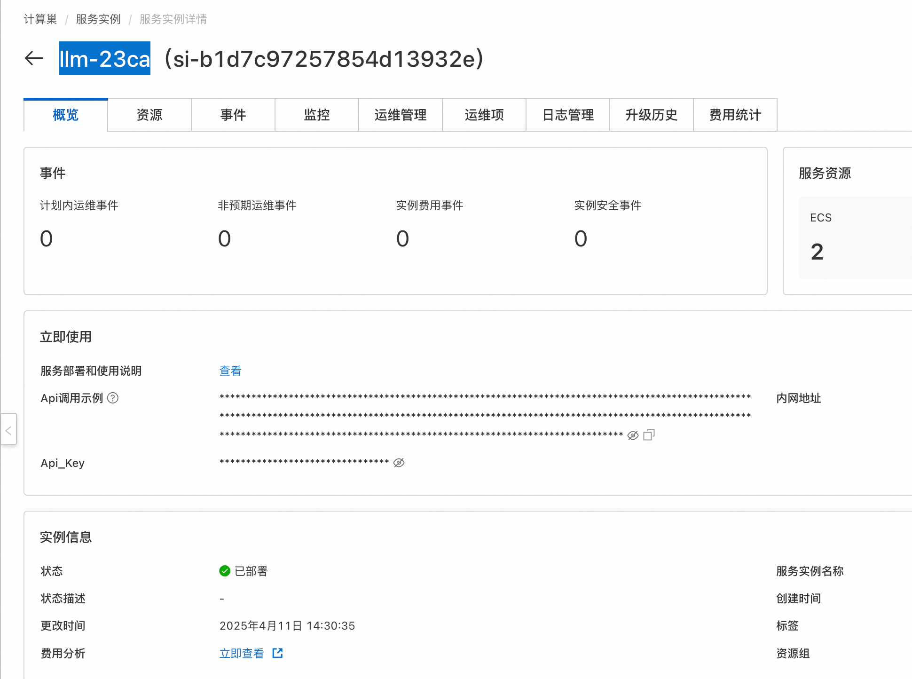 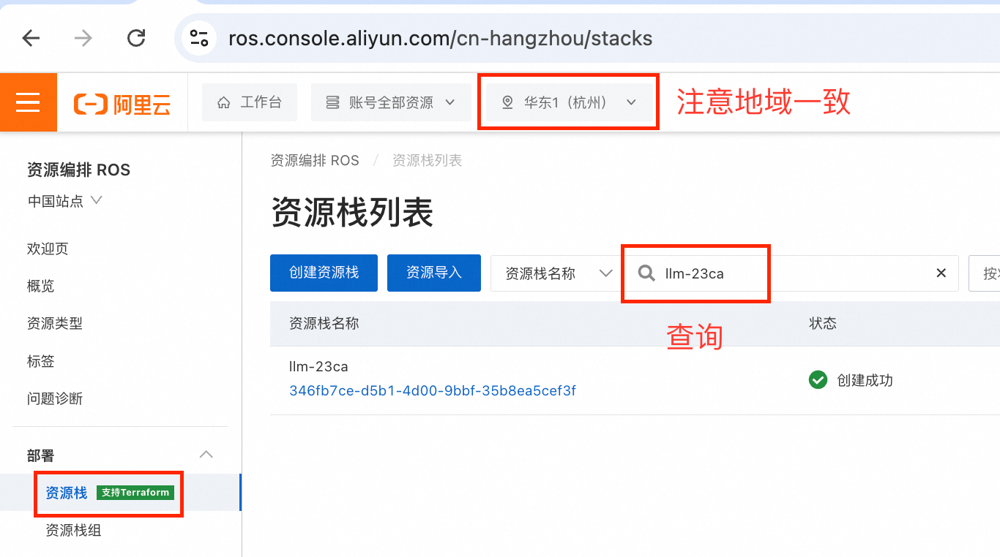
- 进入服务实例对应的资源栈，可以看到所开启的全部资源，并查看到模型部署过程中执行的全部脚本。 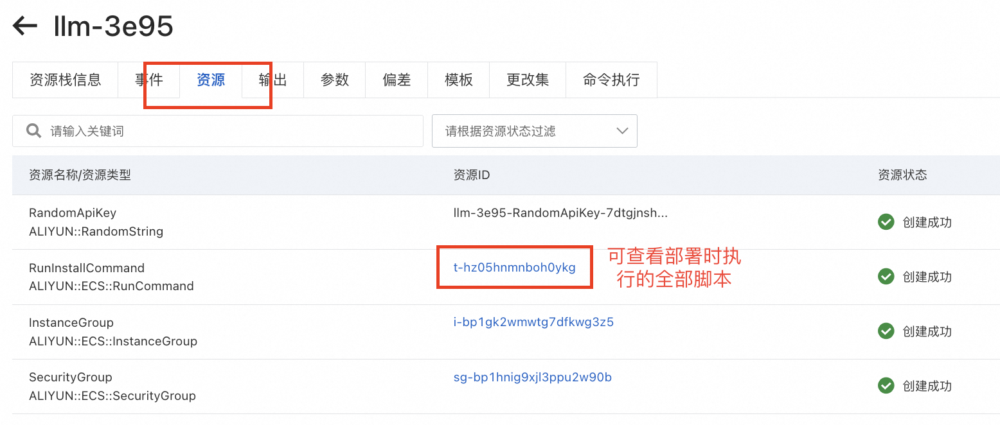 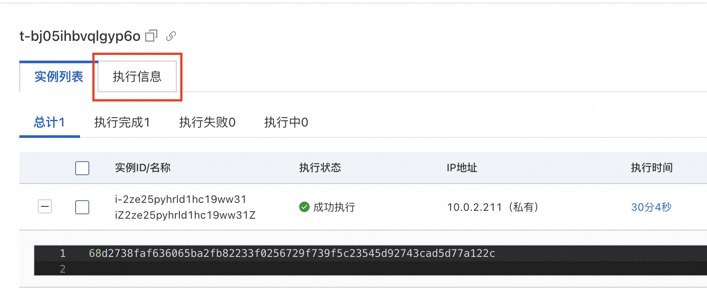
自定义模型部署参数
如果您有自定义的模型部署参数的需求，可以在部署服务实例后，按照如下操作步骤进行修改。
- 远程连接，登入ECS实例。 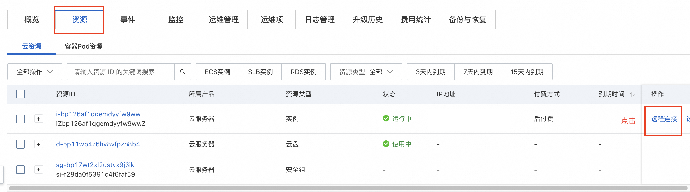
- 执行下面的命令，将模型服务停止。 ```shell sudo docker stop vllm sudo docker rm vllm
- 请参考本文档中的 查询模型部署参数 部分，获取模型部署实际执行的脚本。
- 下面分别是vllm与sglang部署的参考脚本，您可参考参数注释自定义模型部署参数，修改实际执行的脚本。
- vllm部署参考脚本 ```shell docker run -d -t --net=host --gpus all \ --entrypoint /bin/bash \ --privileged \ --ipc=host \ --name vllm \ -v /root:/root \ egs-registry.cn-hangzhou.cr.aliyuncs.com/egs/vllm:0.7.2-pytorch2.5.1-cuda12.4-ubuntu22.04 \ -c "pip install --upgrade vllm==0.8.2 && # 可自定义版本，如 pip install vllm==0.7.1 export GLOO_SOCKET_IFNAME=eth0 && # 采用vpc进行网络通信所需环境变量，勿删改 export NCCL_SOCKET_IFNAME=eth0 && # 采用vpc进行网络通信所需环境变量，勿删改 vllm serve /root/llm-model/${ModelName} \ --served-model-name ${ModelName} \ --gpu-memory-utilization 0.98 \ # Gpu占用率，过高可能导致其他进程触发OOM。取值范围:0~1 --max-model-len ${MaxModelLen} \ # 模型最大长度，取值范围与模型本身有关。 --enable-chunked-prefill \ --host=0.0.0.0 \ --port 8000 \ --trust-remote-code \ --api-key "${VLLM_API_KEY}" \ # 可选，如不需要可去掉。 --tensor-parallel-size $(nvidia-smi --query-gpu=index --format=csv,noheader | wc -l | awk '{print $1}')" # 使用GPU数量，默认使用全部GPU。
- sglang部署参考脚本 ```shell #下载包含sglang的公开镜像 docker pull egs-registry.cn-hangzhou.cr.aliyuncs.com/egs/vllm:0.7.2-sglang0.4.3.post2-pytorch2.5-cuda12.4-20250224
docker run -d -t --net=host --gpus all \ --entrypoint /bin/bash \ --privileged \ --ipc=host \ --name llm-server \ -v /root:/root \ egs-registry.cn-hangzhou.cr.aliyuncs.com/egs/vllm:0.7.2-sglang0.4.3.post2-pytorch2.5-cuda12.4-20250224 \ -c "pip install sglang==0.4.3 && # 可自定义版本 export GLOO_SOCKET_IFNAME=eth0 && # 采用vpc进行网络通信所需环境变量，勿删改 export NCCL_SOCKET_IFNAME=eth0 && # 采用vpc进行网络通信所需环境变量，勿删改 python3 -m sglang.launch_server \ --model-path /root/llm-model/${ModelName} \ --served-model-name ${ModelName} \ --tp $(nvidia-smi --query-gpu=index --format=csv,noheader | wc -l | awk '{print $1}')" \ # 使用GPU数量，默认使用全部GPU。 --trust-remote-code \ --host 0.0.0.0 \ --port 8000 \ --mem-fraction-static 0.9 # Gpu占用率，过高可能导致其他进程触发OOM。取值范围:0~1
内网API访问
复制Api调用示例，在资源标签页的ECS实例中粘贴Api调用示例即可。也可在同一VPC内的其他ECS中访问。 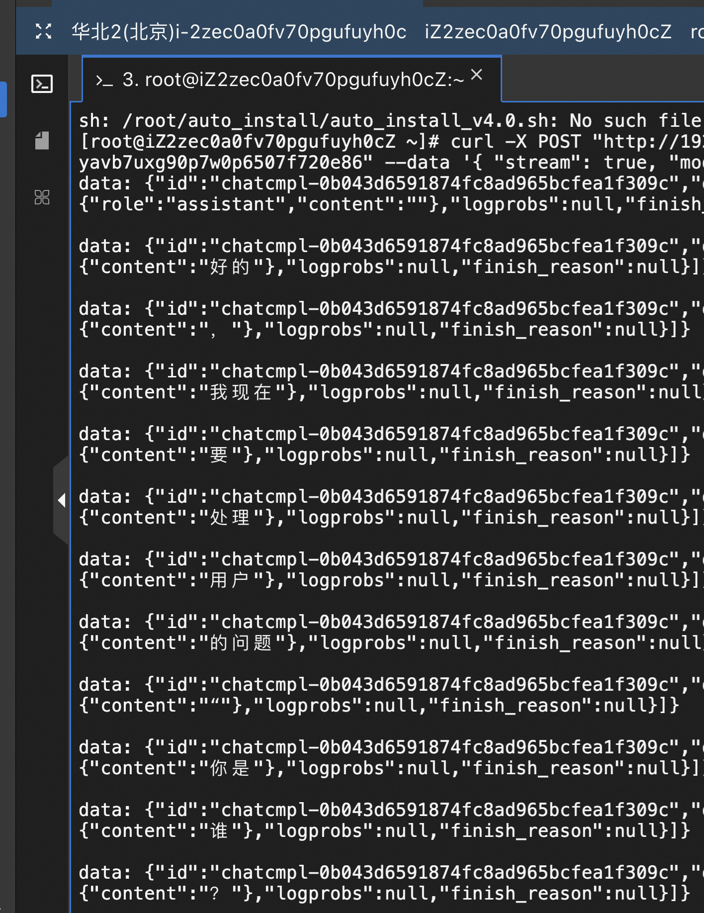
公网API访问
复制Api调用示例，在本地终端中粘贴Api调用示例即可。 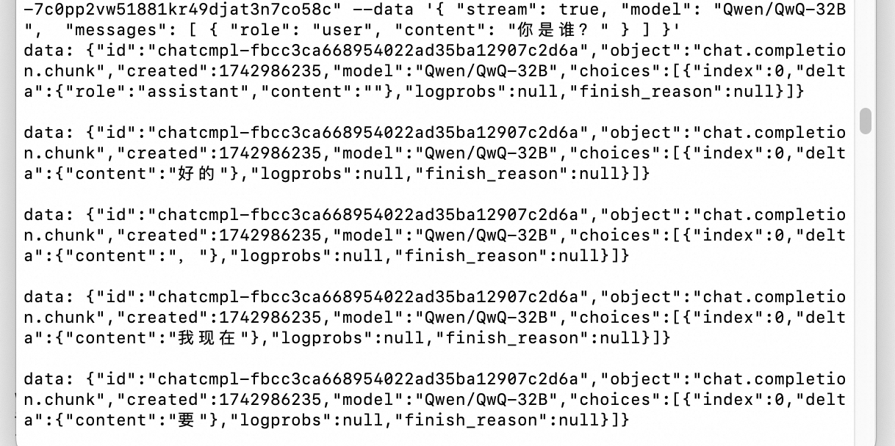
使用 Chatbox 客户端配置 vLLM API 进行对话(可选)
- 访问 Chatbox 下载地址下载并安装客户端，本方案以 macOS M3 为例。 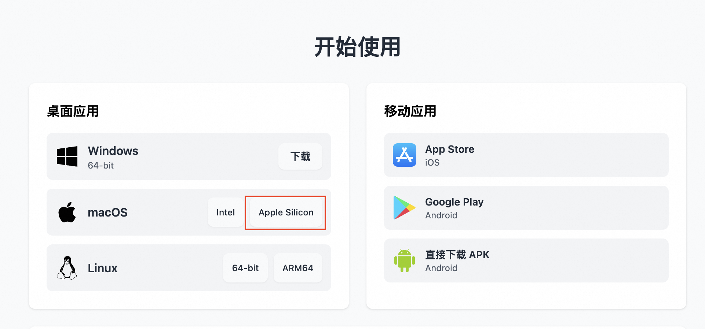
- 运行并配置 vLLM API ，单击设置。

- 在弹出的看板中按照如下表格进行配置。
| 项目 | 说明 | 示例值 |
|---|---|---|
| 模型提供方 | 下拉选择模型提供方。 | 添加自定义提供方 |
| 名称 | 填写定义模型提供方名称。 | vLLM API |
| API 域名 | 填写模型服务调用地址。 | http:// |
| API 路径 | 填写 API 路径。 | /v1/chat/completions |
| 网络兼容性 | 点击开启改善网络兼容性 | 开启 |
| API 密钥 | 填写模型服务调用 API 密钥。 | 部署服务实例后，在服务实例页面可获取Api_Key |
| 模型 | 填写调用的模型。 | Qwen/QwQ-32B |
- 保存配置。在文本输入框中可以进行对话交互。输入问题你是谁？或者其他指令后，调用模型服务获得相应的响应。 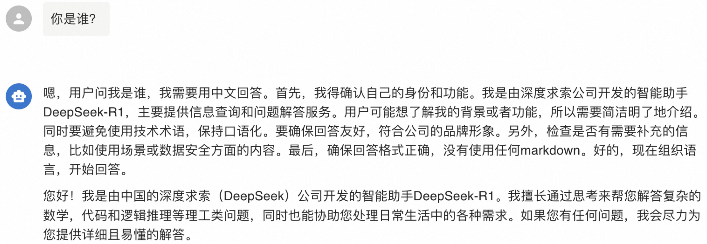
性能测试
压测过程(供参考)
前提条件： 1. 无法直接测试带api-key的模型服务；2. 需要公网。
重新部署模型服务
- 远程连接，登入ECS实例。
- 执行下面的命令，将模型服务停止。 ```shell sudo docker stop vllm sudo docker rm vllm
- 请参考本文档中的 查询模型部署参数 部分，获取模型部署实际执行的脚本。
- 去掉脚本中的--api-key参数，在ECS实例中执行剩余脚本。执行docker logs vllm。若结果如下图所示，则模型服务重新部署成功。
进行性能测试
以QwQ-32B为例，模型服务部署完成后，ssh登录ECS实例。执行下面的命令，即可得到模型服务性能测试结果。可根据参数说明自行修改。 ```shell yum install -y git-lfs git lfs install git lfs clone https://www.modelscope.cn/datasets/gliang1001/ShareGPT_V3_unfiltered_cleaned_split.git git lfs clone https://github.com/vllm-project/vllm.git
docker exec vllm bash -c "
pip install pandas datasets &&
python3 /root/vllm/benchmarks/benchmark_serving.py \
--backend vllm \
--model /root/llm-model/Qwen/QwQ-32B \
--served-model-name Qwen/QwQ-32B \
--sonnet-input-len 1024 \ # 最大输入长度
--sonnet-output-len 4096 \ # 最大输出长度
--sonnet-prefix-len 50 \ # 前缀长度
--num-prompts 400 \ # 从数据集中随机选取或按顺序处理 400 个 prompt 进行性能测试。
--request-rate 20 \ # 模拟每秒 20 个并发请求的压力测试，持续20秒，共400个请求。评估模型服务在负载下的吞吐量和延迟。
--port 8000 \
--trust-remote-code \
--dataset-name sharegpt \
--save-result \
--dataset-path /root/ShareGPT_V3_unfiltered_cleaned_split/ShareGPT_V3_unfiltered_cleaned_split.json
"
```
性能测试结果
Qwen3-235B-A22B压测结果
本服务方案下，针对Qwen3-235B-A22B在GU8TF实例规格下，分别测试QPS为20情况下模型服务的推理响应性能，压测持续时间均为1分钟。
GU8TF规格
QPS为20，1分钟1200个问答请求

QPS为50，1分钟3000个问答请求

Qwen3-32B压测结果
本服务方案下，针对Qwen3-32B在ecs.gn7i-8x.16xlarge（8*A10）实例规格下，分别测试QPS为20情况下模型服务的推理响应性能，压测持续时间均为1分钟。
8*A10规格
QPS为20，1分钟1200个问答请求
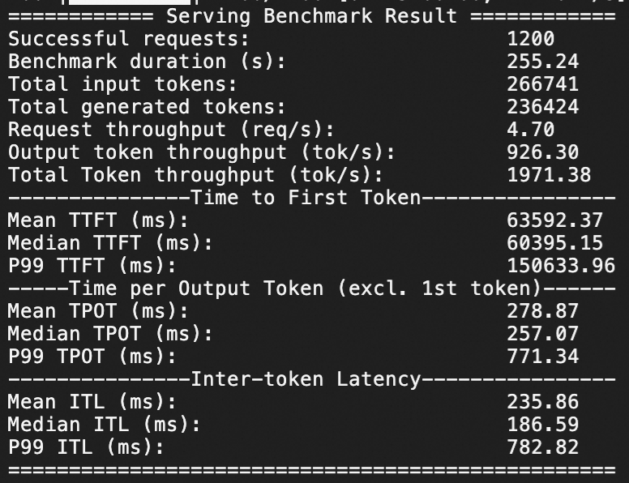
QPS为50，1分钟3000个问答请求
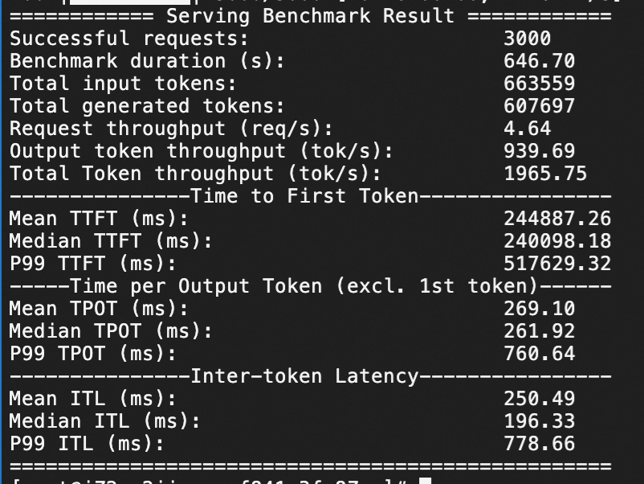
QwQ-32B压测结果
本服务方案下，针对QwQ-32B在4A10和8A10实例规格下，分别测试QPS为10、20、50情况下模型服务的推理响应性能，压测持续时间均为20s。
8*A10规格
QPS为10
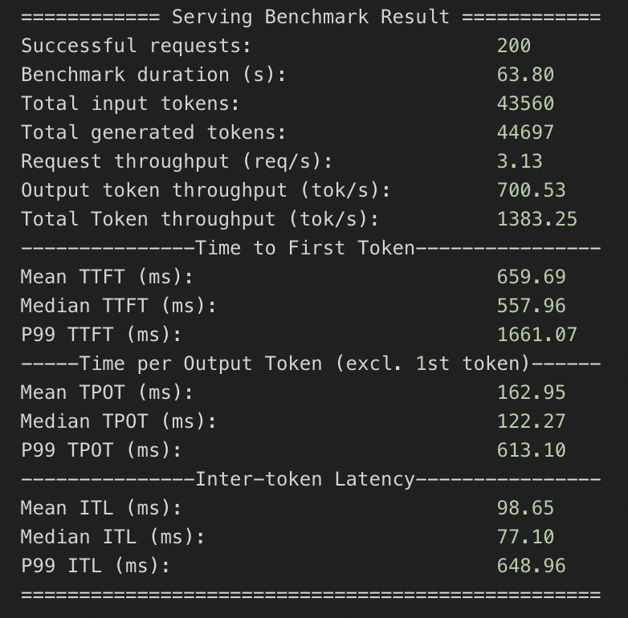
QPS为20
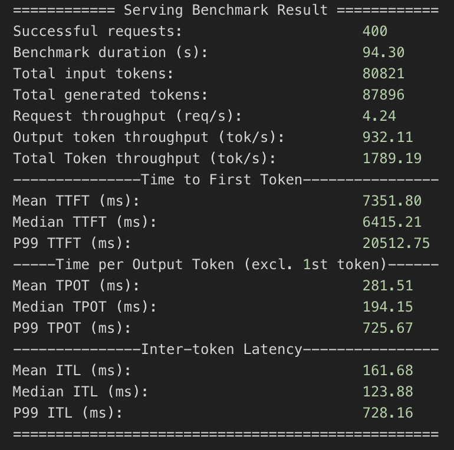
QPS为50
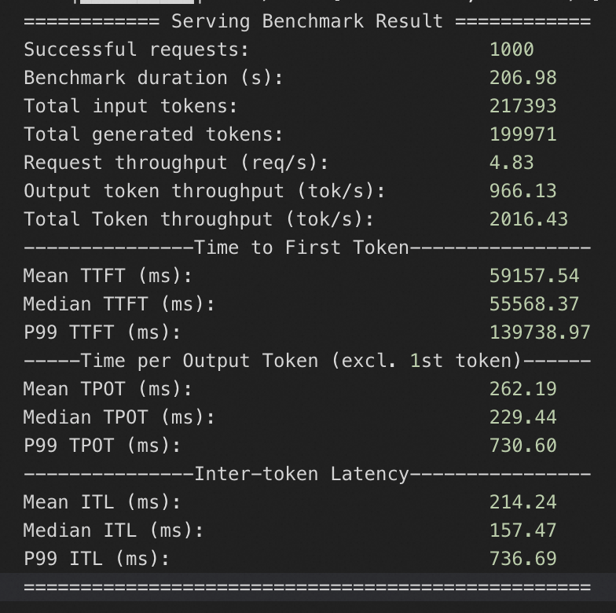
4*A10规格
QPS为10
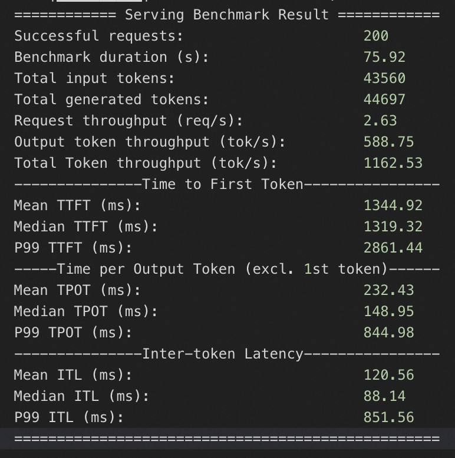
QPS为20
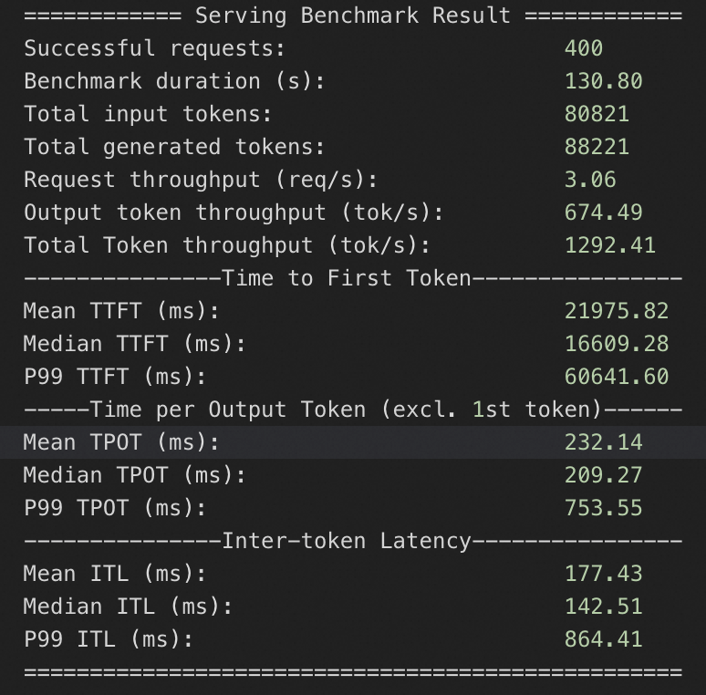
QPS为50
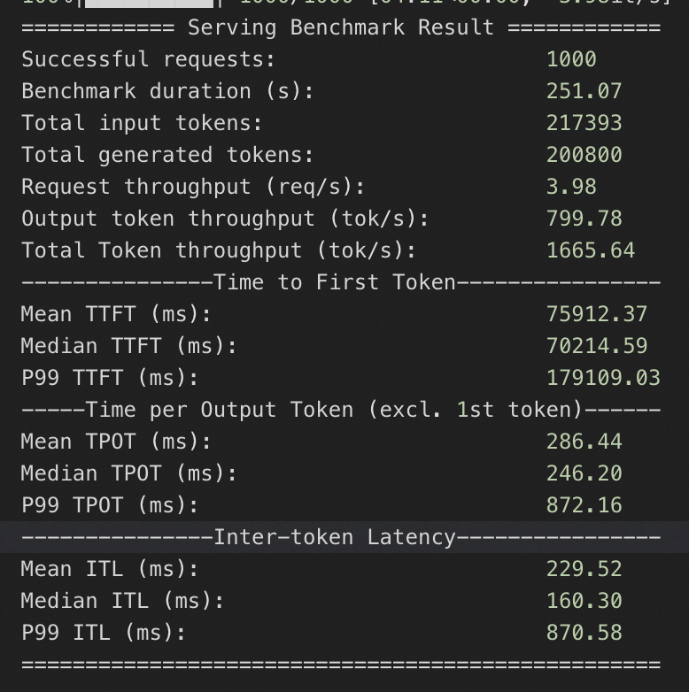